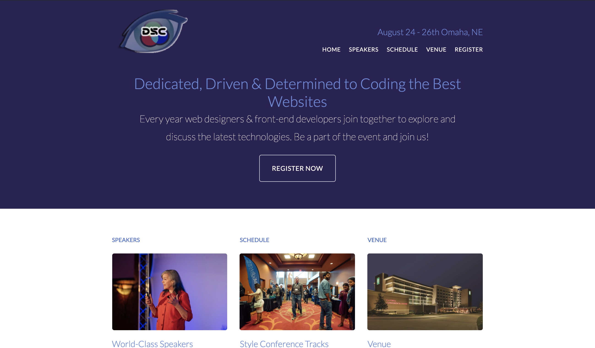
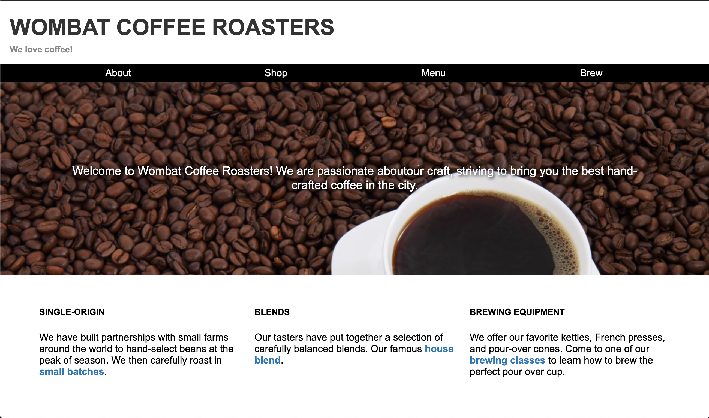
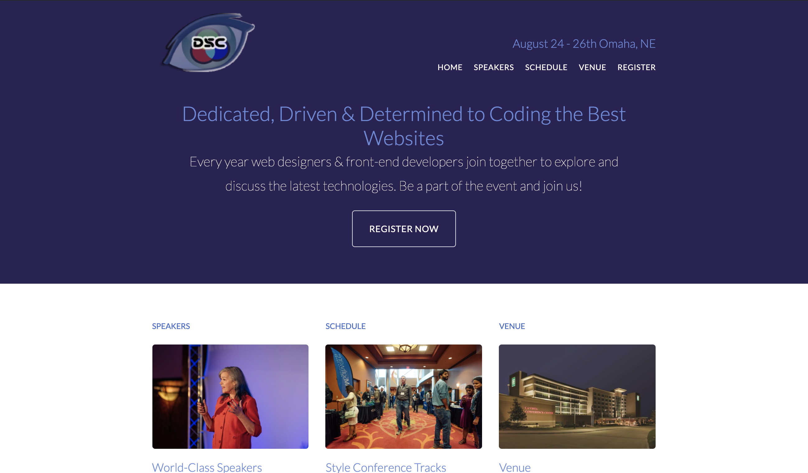
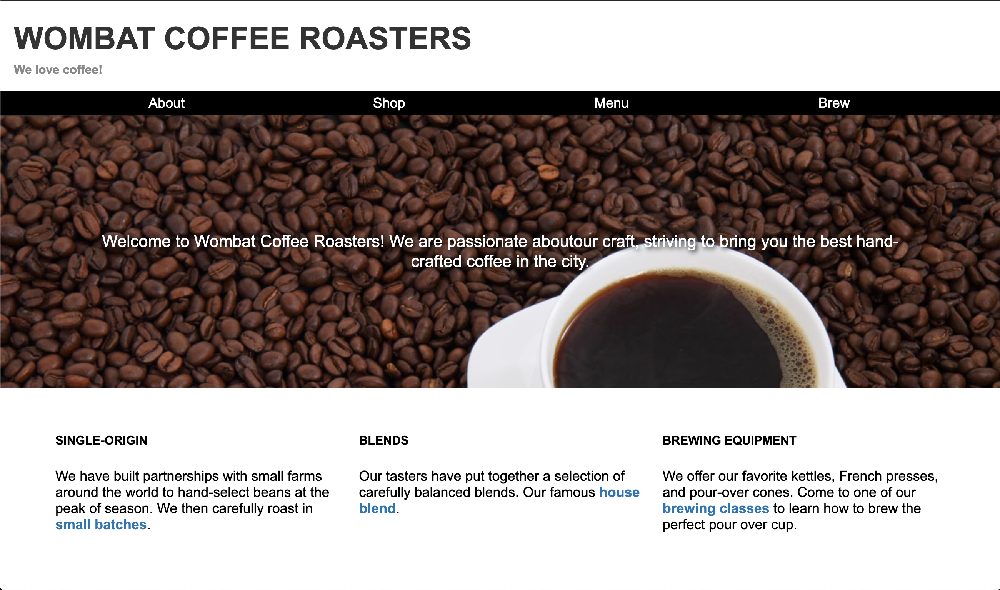

Spencer L. Jones
Emerging Web Developer& Computer Science Student
🏠 Omaha, Nebraska
🎓 Creighton Univeristy
🥁 Classical Musician
🏠 Omaha, Nebraska
🎓 Creighton Univeristy
🥁 Classical Musician
Most Experience
HTML5 CSS3Some Experience
Python JavaScript jQueryAcademic Study
Java C SQL (SQLite3)
◦ AIM Institute Code School: Foundations of Web Development
◦ CS50 Introduction to Computer Science
◦ Certificate in Computer Science, Creighton University (2020 - present)
◦ Master of Music in Percussion Performance, UMKC (2010 - 2012)
◦ Bachelor of Arts in Music, Oklahoma State University (2006 - 2010)
Below is a selection of projects from AIM Code School's Web Development Foundations.
 



Spencer is a classicaly tranined percussionist and timpanist, performing regularly with the Omaha and Kansas City Symphonies. Additionally, he has performed with the Indianapolis Symphony Orchestra, Hawai'i Symphony Orchestra, Des Moines Symphony, Lyric Opera of Kansas City, Quad City Symphony, and New World Symphony of Miami Beach, FL.
He earned the Master of Music in Percussion Performance degree from The University of Missouri-Kansas City Conservatory of Music. He trained in orchestral and chamber music as a fellow at Music Academy of the West, National Orchestral Institute, and the Texas Music Festival, and he is a two-time alumnus of the Cloyd Duff Timpani Masterclass.
Since 2016 Spencer has served on the Artist-Faculty of Omaha Conservatory of Music, where he teaches private lessons and directs percussion actvities. His students regularly make Nebraska All-State ensembles, win superior ratings at competitions, and have earned full-ride scholarships to college. He is in-demand as an audition coach and has helped college and graduate students secure graduate school admission and win positions in regional orchestras.
Please reach out with any jobs/questions/comments/adulations.